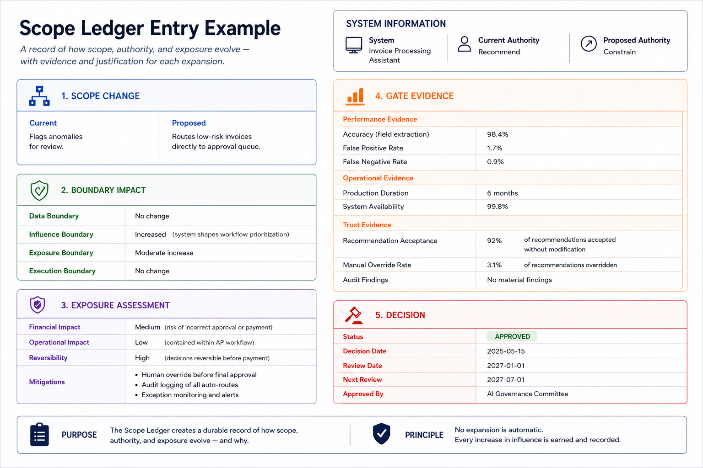

6. THE SCOPE LEDGER
Every authority decision sets the stage for the decisions that come after it. A proposed expansion can't be assessed on its own; reviewers need to grasp the existing authority, the exposure that has been accepted, and the reasoning behind previous expansions. Without a solid history, authority reviews turn into isolated judgments that fail to connect with the earlier decisions shaping the current situation.
SCOPE addresses this through the Scope Ledger.
The Scope Ledger as a System of Record
The Scope Ledger is the organisational system of record for authority, exposure, and authority decisions.
Its goal is not just to document the current state of a system. It aims to preserve the historical context needed to assess future changes in authority. Therefore, the Ledger records both:
- The current authority topology and exposure profile of a system.
- The decisions that established that topology and exposure profile.
A system's current authority can often be observed directly. However, the reasoning behind that authority is often overlooked. This includes why the authority exists, what exposure was accepted to achieve it, and what evidence supported the decision. The Scope Ledger keeps that context.
It's important to note that the Ledger is not an activity log. It captures decisions about scope and authority, not the operational history of the system. Operational logs, audit trails, and system telemetry are kept as separate records. The Ledger documents the governance decisions that define and change authority.
What the Ledger Records
Each governed system maintains a record within the Scope Ledger.
At minimum, that record should contain:
- Current authority stage.
- Current authority topology and boundary definitions.
- Current exposure profile.
- Approved authority changes.
- Exposure assessments and exposure deltas.
- Business justification.
- Gate review outcomes.
- Approval decisions.
- Review schedules and outcomes.
When authority changes are approved, new entries are added to the record. Existing entries are neither removed nor rewritten.
The goal is not to create documentation just for the sake of it. The aim is to preserve the reasoning behind authority decisions so future reviews can assess them in context.
Figure 6 shows how these fields are recorded in a real Ledger entry for an invoice processing system that is expanding from Recommend to Constrain authority.

Figure 6: Example of a SCOPE Ledger EntryTriggering Review and Change
The Scope Ledger is not a passive repository. It serves as an active governance mechanism.
New entries or reviews start with specific trigger events. Common triggers include:
-
Scheduled periodic review.
-
Changes in performance or reliability indicators that could impact operations.
-
Significant environmental changes, such as regulatory changes, organisational restructuring, vendor replacement, or major data source modifications.
-
Formal requests to expand, reduce, or otherwise modify system authority.
These triggers make sure that authority governance stays linked to operational reality instead of turning into a simple documentation task.
Authority changes go through the expansion review process explained earlier in Part 5. This process looks at capability indicators, reliability indicators, exposure assessments, and business justifications before recording approval decisions in the Ledger.
This includes approved expansions, rejected expansions, deferred decisions, and authority contractions.
A Ledger that only logs approved changes does not serve as a governance tool. Governance needs to show both the decisions that were accepted and those that were turned down.
Authority Expansion and Historical Context
Authority decisions build on one another.
A system might start at Assist, move to Recommend, later cross an exposure boundary to Constrain, and eventually gain limited execution authority. Each expansion may be justified on its own.
However, the overall authority profile shows the result of many decisions made over time. Future expansion reviews should go beyond just evaluating the proposed changes. Reviewers need to understand:
- What authority already exists.
- What exposure has already been accepted.
- What assumptions supported previous expansions.
- Whether those assumptions still hold true.
- How authority has built up over time.
The Scope Ledger offers this context. Without it, authority reviews risk becoming isolated decisions that are disconnected from the history that shaped the current system.
Roles and Accountability
The Scope Ledger defines responsibility for authority decisions.
Authority ownership follows accountability for outcomes, not technical management.
The person responsible for the operational outcomes of the system should also manage its authority level. For instance, in an invoice processing system, the finance function would typically hold authority ownership instead of the technology function.
Several roles are involved in the governance process:
- A Ledger Owner accountable for business outcomes and current authority level.
- Technical reviewers who validate topology definitions, check exposure assessments, and assess technical feasibility.
- Risk and compliance reviewers, who evaluate consistency with the organisation’s risk appetite and regulatory requirements.
- Independent auditors or reviewers, who verify governance integrity and ensure compliance with the process.
This separation of roles ensures that authority decisions are assessed independently, preventing any single stakeholder from controlling both the request for authority and the record of that authority.
Integrity, Traceability, and Immutability
Since the Scope Ledger serves as the system of record for authority, its contents must be durable, attributable, and traceable.
Authority decisions should not be deleted when systems change, personnel shift, or organisational priorities adjust. Instead, new entries should replace earlier entries while keeping the historical record intact.
Immutability has two key purposes. First, it maintains the historical context needed for future authority decisions. Second, it prevents the past alteration of authority decisions, exposure assessments, and approval outcomes.
The Ledger as a Shared Governance Artifact
In many cases, authority is not managed only within the organisation using the system.
Vendors, implementation partners, external assessors, and regulators may all influence the lifecycle of authority decisions. Therefore, the Scope Ledger offers a common governance tool that can be shared across organisational lines.
In more developed implementations, the Ledger may play a role in contractual, procurement, assurance, or regulatory processes. Extending authority may require vendor involvement, approval, or renegotiating commercial terms, creating a shared governance system for authority growth.
The wider economic implications of this model are discussed in the next section.
Review, Reaffirmation, and Contraction
The Scope Ledger does more than support authority expansion.
Periodic reviews enable organisations to assess whether existing authority is still justified. The frequency of reviews should relate to the authority level, exposure profile, and operational consequences of the system.
Changes in operating conditions, organisation priorities, regulatory needs, or system performance may challenge the assumptions made when authority was first granted, triggering a review.
Review outcomes may include:
- Reaffirmation of the current authority level.
- Additional controls or monitoring requirements.
- Authority contraction or shifting boundaries.
- Starting a new authority expansion review.
The Ledger thus manages the entire lifecycle of authority: its growth, maintenance, and contraction.
A worked example showing how topology changes are recorded across Ledger entries is provided in Appendix B.
The Scope Ledger makes authority visible and traceable. However, it cannot, on its own, align the incentives that promote authority expansion. Achieving that requires a different mechanism that connects authority to its economic impacts.